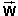

Prerequisites
Students should be familiar with the concepts of acceleration and force, and the way they are connected through Newton's second law of motion. Students should know about the gravitational force and the concept of weight and should know Newton's third law.
Learning Outcomes
Students will learn about the normal force and how to use Newton's second law to calculate the normal force acting on a vertically accelerating object. They will deepen their understanding of both Newton's second and third laws.
Instructions
Students should know how the applet functions, as described in Help and ShowMe.
The applet should be open. The step-by-step instructions in the following text are to be done in the applet. You may need to toggle back and forth between instructions and applet if your screen space is limited.
 Newton's Second and Third Laws
Newton's Second and Third Laws
Newton's Second Law:
The sum of all forces1,
,
(1)
Comment 1. If the forces on the left-hand side of this equation are all real forces, then this equation is true only in an inertial frame, any inertial frame. In this Lesson, we will use the Laboratory Frame throughout which the applet takes to be an inertial frame. Real forces are forces resulting from the interaction between two objects.
Comment 2. "Particle" means a "point particle" of negligible extension. This law also applies to an extended object if the object is rigid and not rotating. Then all parts of the object have the same acceleration, and Equation (1) is true with this acceleration. It does not matter where the forces are acting on the object.
Comment 3. The sum of all forces acting on a particle or extended object is referred to as the net force or the total force acting on the particle or object. The net force is the vector sum of the individual forces.
Newton's Third Law
If an object A exerts a force
Comment 1. Forces are the result of interactions between pairs of objects. The interaction between a pair of objects always gives rise to two forces that are equal in magnitude and opposite in direction. One of these forces acts on one of the objects, the other force acts on the other object. In Newton's words, as translated by I.B. Cohen and A. Whitman "If anyone presses a stone with a finger, the finger is also pressed by the stone."
Comment 2. Newton's third law is sometimes summarized by the glib phrase "action is equal to reaction". If it is not carefully explained what this statement means, it can be interpreted in all kinds of ways, most of which different from what is intended in Newton's third law. Nevertheless, for brevity's sake, in this Lesson the term reaction force will be used to refer to the Newton's-third-law partner of a given force.

RESET the applet. The acceleration and velocity should be zero. PLAY the motion. Nothing should happen. The table-springs-block system remains at rest.
Question 1. Look at the free-body diagram for the block, shown in Figure 1 below. It shows an upward force of magnitude N = 19.6 N and a downward force of equal magnitude W = 19.6 N acting on the block.
What are these two forces?
Figure 1
Let's first of all make sure the free-body diagram in Figure 1 shows all forces acting on the block. In doing so, let's assume we can ignore the forces exerted on the block by the surrounding air. (They are by no means small, but very nearly cancel. The sum of these forces amounts to a force of buoyancy that is small compared to the block's weight and a small force of air resistance when the block is in motion.)
Other than the forces due to the air, there is first of all
the gravitational force  exerted on the block by the earth.
Every massive object has such a force acting on it. In
addition, there are the contact forces exerted by all objects
that are in contact with the block. The air is in contact
with the block and does exert forces on the block. However,
we have agreed to ignore these. The only other objects in
contact with the block are the springs that the block is
resting on. The total force exerted by the springs on the
block is called the normal force because it is
perpendicular to the block's bottom surface with which the
springs are in contact. Let's denote this force by
 .
.
Comment 1. The direction perpendicular to a surface is called the "normal" direction in mathematics, and this is why the force exerted on the block by the springs is called the normal force. Forces exerted by lots of other objects besides springs are called "normal forces" as long as they happen to be perpendicular to a surface. The term "normal force" does not refer to a special type of interaction between objects, but merely to the direction of a force.
Comment 2. The total normal force exerted on the
block is the sum of the normal forces 1,
2, and 3 exerted by the
individual springs on the block,
=
1 + 2 + 3 .
 (2)
(2)
These individual normal forces are illustrated in Figure 2 below. (They are not shown by the applet. The block is shown in grey here to make it easier to see the force vectors.)
Figure 2
Actually, the gravitational force is not a single force either, but a sum over the gravitational forces acting on all the atoms of the block. There are many more such individual gravitational forces acting on the block than there are normal forces acting on the block. The total gravitational force is a volume force, because it is distributed throughout the volume of the block, while the normal force is a surface force.
Comment 3. In finding the forces exerted on the block, we have divided all forces that are possible into two types: contact forces and long-range forces. For a contact force to exist, there must be another object in contact with the block. Long-range forces do not require direct contact. There are three kinds of long-range forces that can be observed in macroscopic (as opposed to sub-atomic) phenomena: gravitational, electric, and magnetic forces. The gravitational force exerted by the earth on any massive object near the surface of the earth is always present, as in the case of the block. However, the block does not have any electric or magnetic forces acting on it because it is not electrically charged and has no magnetic properties.
Question 2. Why do the normal and gravitational forces acting on the block have the same magnitude when the block is not accelerating? Base your answer on Newton's laws.
Answer. First let's note that Newton's third law has nothing to do with the explanation.
It may be tempting to think that it does because the law talks about two forces that are opposite in direction and equal in magnitude, which is what we have here. However, the two forces in Newton's third law act on different bodies while the two forces that we are considering here act on the same body, namely, the block.
It is Newton's second law that provides the explanation. This law deals with forces that are acting on one and the same body. Let's apply this law to the block.
Now that we are confident that we know what all the forces are, we can write down the Newton's-second-law equation (1) for the block,
+ = m
.
 (3)
(3)
Since the block's acceleration is zero, the right-hand side of equation (3) vanishes which implies
= -
.
 (4)
(4)
In words, the normal force is opposite to the gravitational force and has the same magnitude as the gravitational force.
Additional Observation. The earlier Eq.(2), and a similar one for the gravitational forces acting on the parts of the block, also is evidence that the normal force is not related to the gravitional force by Newton's third law. The individual normal forces acting on the molecules in the bottom surface of the block cannot be paired individually with the gravitational forces acting on the molecules throughout the volume of the block.
Question 3. Suppose a book is at rest on a table, as illustrated in Figure 3 below. This time there are no springs supporting the book. The book is directly in contact with the table. Is there still a normal force acting on the book and, if so, what object is exerting this normal force?

Figure 3
Answer. Since the book has zero acceleration, Newton's second law applied to the book still requires the net force on the book to be zero. This means that in addition to the downward gravitational force there must again be an upward force whose magnitude is equal to W be acting on the book. This is again a normal force, because the force must be vertical and therefore at right angles to the bottom surface of the book.
This upward normal force is exerted by the table on the book. There is
no other object in contact with the book that could be exerting
this normal force.
Question: How can a table be exerting an upward force on a book? Answer: Quite similarly to the way in which the springs in the applet can exert an upward force on the block.
A table may appear quite rigid, but in fact it is not totally rigid and behaves like a rather stiff spring. Placing a book on a table will cause a slight compression of the table in proportion to the weight of the book. The same kind of force that causes a compressed spring to push back against the object also causes a table to push back against a book lying on the table.
Question 1. How could one measure the magnitude N of the normal force exerted by the springs on the block?
Answer. REWIND the applet. Vary the acceleration, and observe the magnitude of the normal force and the amount of compression of the springs.
Observe that as the normal force increases in magnitude the springs get more compressed. Does this not suggest a way of measuring N?
Is there a theoretical reason why the compression of the springs should be a measure of N, not W?
Yes, there is. Let's go through the argument. First of all,
what are the reaction forces (in the Newton's-third-law
sense) to the normal forces 1 to 3
and to the total normal force ?
Normal force 1 is exerted by the left spring on the block
(the part of the block in contact with the spring). The reaction
force to this force is the force -1 exerted by the block
on the left spring. Notice how the words "left spring" and
"block" in the first sentence for the force simply need to be
interchanged in the second sentence to get the reaction
force. This reaction force, and the reaction forces to the other
two spring forces exerted on the block are illustrated in Figure
4 below by red arrows. (These reaction forces are not shown by
the applet.)
Figure 4
The reaction force to the total normal force is the sum of the
three reaction forces illustrated in red in Figure 4.
Thus, the total force pushing down on the springs is the
reaction force to the normal force and therefore has magnitude
N, not
W.
Figure 4 illustrates the case when the acceleration is zero and N = W. Thus the force pressing down on the springs will have magnitude W in this case. However, when the acceleration of the block is not zero (see next section), N is unequal to W. In this case the force pushing down on the springs will have magnitude N, not W, with N not equal to W.
The compression of the springs is a measure of the magnitude of the force applied to the springs. Thus, by calibrating the springs one can measure N by measuring the compression of the springs.
Strain gauges work according to this principle even though they do not use springs to sense deformation but wires whose electrical resistance changes upon deformation.
Question 2. What is the magnitude and direction of the
total force exerted on the springs by the table? In general,
when the system table-springs-block is accelerating, is this
force equal to or -? Which one of Newton's laws, the second one or
the third one, determines the answer?
Hint. Apply Newton's second law to the springs, and assume the mass of the springs to be negligible.
Question. What is the magnitude N of the normal force acting on the block when the system table-springs-block is accelerating upward with an acceleration of magnitude 2.00 m/2? The block's mass is 2.00 kg. Use g = 9.8 m/s2 for the magnitude of the acceleration due to gravity.
Answer. Use the applet to find the answer. The answer, N = 23.6 N, is shown in Figure 5 below.

Figure 5
How would one calculate the value of N? Again, we apply Newton's second law to the block.
We need to know what forces are acting on the block. Compared to the situation considered in the earlier section "What Is A Normal Force?", nothing has changed in the kinds of forces that are acting on the block just because the block is accelerating! The same two kinds of forces as earlier, shown again in the free-body diagram in Figure 5, are acting on the block.
The only thing that is different is that when the acceleration is not zero the two forces have different magnitudes. The upward-directed force, the normal force, must have the greater magnitude. Reason: the acceleration is upward and therefore, by Newton's second law, the net force must be upward also. Thus, the upward normal force must have greater magnitude than the downward gravitational force.
By the way, the fact that N is unequal to W in this case is again evidence that the normal force and the gravitational force are not an action-reaction force pair. The two forces in an action-reaction force pair always have the same magnitude, even when the interacting objects are accelerating.
Since the block is moving in the y-direction, we need to write down the y-component of the Newton's-second-law equation (1) for the block,
Ny + Wy = m
ay.  (5)
(5)
Since the normal force is in the positive y-direction, Ny = N. Similarly, since the acceleration is in the positive y-direction, ay = a. However, the gravitational force is in the negative y-direction, and therefore Wy = -W.
Making these substitutions in Equation (5) leads to
N - W = m a.  (6)
(6)
The weight W is equal to mg. Substituting this expression into Equation (6) and solving the resulting equation for N gives
N = mg + ma = m(g +
a) . (7)
(7)
Substituting the given values gives
N = 2.00 x (9.8 + 2.00) = 23.6 N. (8)
(8)
Exercise 1. Calculate the magnitude of the normal force when the acceleration is downward and has magnitude 2.00 m/s2. Check your result with the applet.
Exercise 2. A person is standing on a bathroom scale in an elevator that is accelerating upward. What is the reading on the scale if the person's mass is 60 kg and the magnitude of the acceleration is 1.5 m/s2?
Exercise 3. A person is standing on a bathroom scale in an elevator that is slowing down while moving downward. The elevator is losing speed at a rate of 1.5 m/s2. What is the reading on the scale if the person's mass is 60 kg?
Hint. The so-called 'weight' shown by the bathroom scale is really the normal force exerted by the scale on the person standing on the scale.
This is so because the pointer on the scale indicates the compression of the springs inside the scale, and this compression is proportional to the magnitude of the force exerted on the springs at the top and bottom of the springs, which in turn is equal to the magnitude of the normal force exerted by the scale on the person. See the discussion in the preceding section "Measuring The Normal Force".
Note that bathroom scales are not calibrated in newton, even though they measure forces, but in kilogram (or sometimes in lb, but let's assume kg here). The mass value shown by a bathroom scale is the mass whose corresponding weight is equal to the force pressing down on the scale. Thus, if a 600-N force is pressing down on the scale, the scale will read 600/9.8 = 61.2 kg.